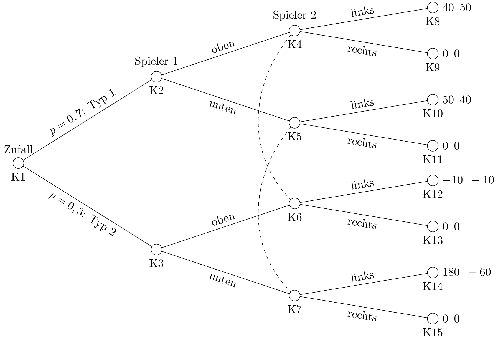

Ein Nash-Gleichgewicht liegt vor, wenn jeder Spieler die beste Antwort auf die beste Strategie des Gegenspielers spielt.
Formal:
\(u_{i}\left(s_{i}^{*},s_{-i}^{*}\right)\geq u_{i}\left(s_{i},s_{-i}^{*}\right)\mbox{ für alle }i,\mbox{ }s_{i}\in S_{i}\)
Intuition: Ein Nash-Gleichgewicht liegt vor, wenn kein Spieler mehr die Möglichkeit hat, seine Situation durch eine nur eigene Entscheidungsänderung zu verbessern.
In der Matrix oben heißt dass, das geprüft werden muss
\(A \geq B \land a \geq c\)\(\rightarrow\)ol
\(B \geq A \land b \geq d\)\(\rightarrow\)ul
\(C \geq D \land c \geq a\)\(\rightarrow\)or
\(D \geq C \land d \geq b\)\(\rightarrow\)ur
Es kann kein oder ein Nash-Gleichgewicht existieren oder mehrere Nash-Gleichgewichte
# Funktionen für Nash-Bedingungendef is_ol_nash(A, B, a, c):return"ol"if (A >= B) and (a >= c) else"not_ol"def is_ul_nash(B, A, b, d):return"ul"if (B >= A) and (b >= d) else"not_ul"def is_or_nash(C, D, c, a):return"or"if (C >= D) and (c >= a) else"not_or"def is_ur_nash(D, C, d, b):return"ur"if (D >= C) and (d >= b) else"not_ur"# Nash-Bedingungen überprüfen und Strings zuweisenCand_Nash_ol = is_ol_nash(A, B, a, c)Cand_Nash_ul = is_ul_nash(B, A, b, d)Cand_Nash_or = is_or_nash(C, D, c, a)Cand_Nash_ur = is_ur_nash(D, C, d, b)# Ergebnisse kombinieren und NAs entfernenNash_GG = np.array([Cand_Nash_ol, Cand_Nash_ul, Cand_Nash_or, Cand_Nash_ur])Nash_GG_filtered = []for element in Nash_GG:if element =="ol"or element =="ul"or element =="or"or element =="ur": Nash_GG_filtered.append(element)# Ergebnis ausgeben#print(Nash_GG_filtered)
Code
print(f"Nash-Gleichgewicht(e) in reinen Strategien: {', '.join(Nash_GG_filtered)}")
# Funktionen für Nash-Bedingungendef is_ol_nash(A, B, a, c):return"ol"if (A >= B) and (a >= c) else"not_ol"def is_ul_nash(B, A, b, d):return"ul"if (B >= A) and (b >= d) else"not_ul"def is_or_nash(C, D, c, a):return"or"if (C >= D) and (c >= a) else"not_or"def is_ur_nash(D, C, d, b):return"ur"if (D >= C) and (d >= b) else"not_ur"# Nash-Bedingungen überprüfen und Strings zuweisenCand_Nash_ol = is_ol_nash(A, B, a, c)Cand_Nash_ul = is_ul_nash(B, A, b, d)Cand_Nash_or = is_or_nash(C, D, c, a)Cand_Nash_ur = is_ur_nash(D, C, d, b)# Ergebnisse kombinieren und NAs entfernenNash_GG = np.array([Cand_Nash_ol, Cand_Nash_ul, Cand_Nash_or, Cand_Nash_ur])Nash_GG_filtered = []for element in Nash_GG:if element =="ol"or element =="ul"or element =="or"or element =="ur": Nash_GG_filtered.append(element)# Ergebnis ausgebenprint(f"Nash-Gleichgewicht(e) in reinen Strategien: {', '.join(Nash_GG_filtered)}")
Nash-Gleichgewicht(e) in reinen Strategien: ul, or
3.2.2.2.2 Chicken Game
Code
import numpy as npimport random# Zufällige Ganzzahlen zwischen 0 und 9 generierenA = random.randint(5, 7)B = random.randint(8, 9)C = random.randint(2, 4)D = random.randint(0, 1)a = random.randint(5, 7)b = random.randint(2, 4)c = random.randint(8, 9)d = random.randint(0, 1)# Formatierte Bimatrix ausgeben# print(f" l r\n o {A},{a} {C},{c}\n u {B},{b} {D},{d}")plot = create_plot()plot
Code
# Funktionen für Nash-Bedingungendef is_ol_nash(A, B, a, c):return"ol"if (A >= B) and (a >= c) else"not_ol"def is_ul_nash(B, A, b, d):return"ul"if (B >= A) and (b >= d) else"not_ul"def is_or_nash(C, D, c, a):return"or"if (C >= D) and (c >= a) else"not_or"def is_ur_nash(D, C, d, b):return"ur"if (D >= C) and (d >= b) else"not_ur"# Nash-Bedingungen überprüfen und Strings zuweisenCand_Nash_ol = is_ol_nash(A, B, a, c)Cand_Nash_ul = is_ul_nash(B, A, b, d)Cand_Nash_or = is_or_nash(C, D, c, a)Cand_Nash_ur = is_ur_nash(D, C, d, b)# Ergebnisse kombinieren und NAs entfernenNash_GG = np.array([Cand_Nash_ol, Cand_Nash_ul, Cand_Nash_or, Cand_Nash_ur])Nash_GG_filtered = []for element in Nash_GG:if element =="ol"or element =="ul"or element =="or"or element =="ur": Nash_GG_filtered.append(element)# Ergebnis ausgebenprint(f"Nash-Gleichgewicht(e) in reinen Strategien: {', '.join(Nash_GG_filtered)}")
Nash-Gleichgewicht(e) in reinen Strategien: ul, or
3.2.2.2.3 Geschlechterkampf
Code
import numpy as npimport random# Zufällige Ganzzahlen zwischen 0 und 9 generierenA = random.randint(8, 9)B = random.randint(0, 2)C = random.randint(3, 5)D = random.randint(6, 7)a = random.randint(6, 7)b = random.randint(0, 2)c = random.randint(3, 5)d = random.randint(8, 9)# Formatierte Bimatrix ausgeben# print(f" l r\n o {A},{a} {C},{c}\n u {B},{b} {D},{d}")plot = create_plot()plot
Code
# Funktionen für Nash-Bedingungendef is_ol_nash(A, B, a, c):return"ol"if (A >= B) and (a >= c) else"not_ol"def is_ul_nash(B, A, b, d):return"ul"if (B >= A) and (b >= d) else"not_ul"def is_or_nash(C, D, c, a):return"or"if (C >= D) and (c >= a) else"not_or"def is_ur_nash(D, C, d, b):return"ur"if (D >= C) and (d >= b) else"not_ur"# Nash-Bedingungen überprüfen und Strings zuweisenCand_Nash_ol = is_ol_nash(A, B, a, c)Cand_Nash_ul = is_ul_nash(B, A, b, d)Cand_Nash_or = is_or_nash(C, D, c, a)Cand_Nash_ur = is_ur_nash(D, C, d, b)# Ergebnisse kombinieren und NAs entfernenNash_GG = np.array([Cand_Nash_ol, Cand_Nash_ul, Cand_Nash_or, Cand_Nash_ur])Nash_GG_filtered = []for element in Nash_GG:if element =="ol"or element =="ul"or element =="or"or element =="ur": Nash_GG_filtered.append(element)# Ergebnis ausgebenprint(f"Nash-Gleichgewicht(e) in reinen Strategien: {', '.join(Nash_GG_filtered)}")
Nash-Gleichgewicht(e) in reinen Strategien: ol, ur
3.2.2.2.4 Gefangenendilemma
Code
import numpy as npimport random# Zufällige Ganzzahlen zwischen 0 und 9 generierenA = random.randint(5, 7)B = random.randint(8, 9)C = random.randint(0, 1)D = random.randint(2, 4)a = random.randint(5, 7)b = random.randint(0, 1)c = random.randint(8, 9)d = random.randint(2, 4)# Formatierte Bimatrix ausgeben# print(f" l r\n o {A},{a} {C},{c}\n u {B},{b} {D},{d}")plot = create_plot()plot
Code
# Funktionen für Nash-Bedingungendef is_ol_nash(A, B, a, c):return"ol"if (A >= B) and (a >= c) else"not_ol"def is_ul_nash(B, A, b, d):return"ul"if (B >= A) and (b >= d) else"not_ul"def is_or_nash(C, D, c, a):return"or"if (C >= D) and (c >= a) else"not_or"def is_ur_nash(D, C, d, b):return"ur"if (D >= C) and (d >= b) else"not_ur"# Nash-Bedingungen überprüfen und Strings zuweisenCand_Nash_ol = is_ol_nash(A, B, a, c)Cand_Nash_ul = is_ul_nash(B, A, b, d)Cand_Nash_or = is_or_nash(C, D, c, a)Cand_Nash_ur = is_ur_nash(D, C, d, b)# Ergebnisse kombinieren und NAs entfernenNash_GG = np.array([Cand_Nash_ol, Cand_Nash_ul, Cand_Nash_or, Cand_Nash_ur])Nash_GG_filtered = []for element in Nash_GG:if element =="ol"or element =="ul"or element =="or"or element =="ur": Nash_GG_filtered.append(element)# Ergebnis ausgebenprint(f"Nash-Gleichgewicht(e) in reinen Strategien: {', '.join(Nash_GG_filtered)}")
Nash-Gleichgewicht(e) in reinen Strategien: ur
3.2.2.2.5 Spiel ohne Gleichgewicht
Code
import numpy as npimport randomwhileTrue: A = random.randint(0, 9) a = random.randint(0, 9) B = random.randint(0, 9) b = random.randint(0, 9) C = random.randint(0, 9) c = random.randint(0, 9) D = random.randint(0, 9) d = random.randint(0, 9)# Bedingungen prüfen cond1 = (A >= B) and (a >= c) cond2 = (B >= A) and (b >= d) cond3 = (C >= D) and (c >= a) cond4 = (D >= C) and (d >= b)# Wenn keine Bedingung erfüllt ist, Schleife beendenifnot (cond1 or cond2 or cond3 or cond4):breakplot = create_plot()plot
Code
# Nash-Bedingungen überprüfen und Strings zuweisenCand_Nash_ol = is_ol_nash(A, B, a, c)Cand_Nash_ul = is_ul_nash(B, A, b, d)Cand_Nash_or = is_or_nash(C, D, c, a)Cand_Nash_ur = is_ur_nash(D, C, d, b)# Ergebnisse kombinieren und NAs entfernenNash_GG = np.array([Cand_Nash_ol, Cand_Nash_ul, Cand_Nash_or, Cand_Nash_ur])Nash_GG_filtered = []for element in Nash_GG:if element =="ol"or element =="ul"or element =="or"or element =="ur": Nash_GG_filtered.append(element)# Ergebnis ausgebenprint(f"Nash-Gleichgewicht(e) in reinen Strategien: {', '.join(Nash_GG_filtered)}")
Nash-Gleichgewicht(e) in reinen Strategien:
3.2.2.3 Wiederholte Spiele
Ausgangspunkt Gefangenendilemma mit \(B>A>D>C\) und \(c>a>d>b\)
Nash-Gleichgewicht dann unten rechts mit der Auszahlung D, d
Effizient wäre oben links mit Ausuahlung A, a
Tit for Tat: Kooperiere in der ersten Runde, erwidere danach die Strategiewahl des Gegenspielers reziprok
Dadurch “Bestrafung” für unkooperatives Verhalten möglich
Funktioniert das immer?
Funktioniert nicht bei bekannter endlicher Anzahl von Runden
In jeder Runde wird mit der Wahrscheinlichkeit \(p\) eine weitere Runde gespielt.
Erwartungswert der Kooperationsgeflecht für \(T\) Perioden (die Annahme einer endlichen Anzahl von Perioden wird gleich wieder aufgegeben)
import numpy as npimport random# Zufällige Ganzzahlen zwischen 0 und 9 generierenA = random.randint(5, 7)B = random.randint(8, 9)C = random.randint(0, 1)D = random.randint(2, 4)a = random.randint(5, 8)b = random.randint(0, 1)c = random.randint(8, 9)d = random.randint(2, 4)# Formatierte Bimatrix ausgebenprint(" l r")print(f"o {A},{a}{C},{c}")print(f"u {B},{b}{D},{d}")# Funktionen für Nash-Bedingungendef is_ol_nash(A, B, a, c):return"ol"if (A >= B) and (a >= c) else"not_ol"def is_ul_nash(B, A, b, d):return"ul"if (B >= A) and (b >= d) else"not_ul"def is_or_nash(C, D, c, a):return"or"if (C >= D) and (c >= a) else"not_or"def is_ur_nash(D, C, d, b):return"ur"if (D >= C) and (d >= b) else"not_ur"# Nash-Bedingungen überprüfen und Strings zuweisenCand_Nash_ol = is_ol_nash(A, B, a, c)Cand_Nash_ul = is_ul_nash(B, A, b, d)Cand_Nash_or = is_or_nash(C, D, c, a)Cand_Nash_ur = is_ur_nash(D, C, d, b)# Ergebnisse kombinieren und NAs entfernenNash_GG = np.array([Cand_Nash_ol, Cand_Nash_ul, Cand_Nash_or, Cand_Nash_ur])Nash_GG_filtered = []for element in Nash_GG:if element =="ol"or element =="ul"or element =="or"or element =="ur": Nash_GG_filtered.append(element)# Ergebnis ausgebenprint(Nash_GG_filtered)# Kritisches p für Kooperationp_krit = (B-A)/(B - D)#print(round(p_krit,3))print(f"Für Kooperation durch Spieler 1 muss die Wahrscheinlichkeit für eine weitere Runde mindestens {str(round(p_krit,3)).replace('.',',')} betragen.")p_krit = (c-a)/(c - d)#print(round(p_krit,3))print(f"Für Kooperation durch Spieler 2 muss die Wahrscheinlichkeit für eine weitere Runde mindestens {str(round(p_krit,3)).replace('.',',')} betragen.")
3.2.2.4 Trembling Hand
Code
# Pythonimport randomrandom.seed(246)whileTrue: A = random.randint(0, 9) a = random.randint(0, 9) B = random.randint(0, 9) b = random.randint(0, 9)# C = random.randint(0, 9) C=-20 c = random.randint(0, 9) D = random.randint(0, 9) d = random.randint(0, 9)# Bedingungen prüfen cond1 = (A > B) and (a >= c) # NGG ol cond2 = (D > C) and (A > D) and (a > d)# Wenn beide Bedingung erfüllt ist, Schleife beendenif (cond1 and cond2):break# Ausgabe der Zahlen#print(f"A={A}, a={a}, B={B}, b={b}, C={C}, c={c}, D={D}, d={d}")# Formatierte Bimatrix ausgeben#print(" l r")#print(f"o {A},{a} {C},{c}")#print(f"u {B},{b} {D},{d}")plot = create_plot()plot
Idee: Manche Nash-Gleichgewichte sind riskant
Wenn der Gegenspieler “versehentlich” eine falsche Strategie spielt, dann macht man evtl hohe Verluste
Wie hoch darf die Fehlerwahrscheinlichkeit des Gegenspielers sein, damit das Nash-Gleichgewicht noch die richtige Strategie impliziert?
Angenommen, beide Spieler streben ein Nash-Gleichgewicht oben links an
Für Spieler 1 muss dann gelten
\(E_o\geq E_u\)
Wenn er davon ausgeht, dass Spieler 2 mit einer Wahrscheinlichkeit von \(p\) versehentlich rechts statt links spielt, heißt das
\((1-p)A+pC \geq (1-p)B+pD\)
\(\iff A-pA+pC\geq B-pB+pD\)
\(\iff A-p(A-C) \geq B-p(B-D)\)
\(\iff p(B-D)-p(A-C) \geq B-A\)
\(\iff p(B-D-A+C)\geq B-A\)
mit \((B-D-A+C) <0\)
\(\iff p \leq \frac{B-A}{B-A-D+C}=\frac{A-B}{A-B-C+D}\)
# Wahrscheinlichkeiten ausrechnenfrom sympy import Symbol, solve, Eqsymbols = [Symbol(name) for name in'ABCDabcdp']A, B, C, D, a, b, c, d, p = symbols # Entpacken und als separate Variablen speichern# Beide streben ol anE_o= (1-p)*A+p*CE_u= (1-p)*B + p*Dsol = solve(Eq(E_o, E_u), p)print(sol)E_l = (1-p)*a + p*bE_r = (1-p)*c + p*dsol = solve(Eq(E_l, E_r),p)print(sol)
3.2.3 Gemischte Strategien
Wenn es entweder kein Nash-Gleichgewicht (in reinen Strategien) gibt oder mehrere Nash-Gleichgewichte, dann lässt sich das Handeln der Spielenden nicht gut vorhersagen
Aus der Perspektive jedes Spielenden ist das Handeln des Gegenübers eine Zufallsvariable. Mit einer bestimmten Wahrscheinlichkeit wählt das Gegenüber eine seiner Strategien.
Den Zufall kann man aber näher charakterisieren, wenn man sich überlegt, welche Wahrscheinlichkeiten ein rationales Gegenüber wählen würde.
Ein rationales Gegenüber wählt die Wahrscheinlichkeiten so, dass der spielende Akteur keine Möglichkeit mehr hat, seine Situation durch die Wahl seiner Strategie zu verbessern.
Jede spielende Person wählt die Wahrscheinlichkeiten für ihre Handlung also so, dass das jeweilige Gegenüber indifferent ist in der Wahl seiner Handlungen.
Es muss also gelten: \[E_o=E_u\]\[\iff p_l A+(1-p_l)C=p_lB+(1-p_l)D\]
import numpy as npimport randomfrom lets_plot import*random.seed(12)whileTrue: A = random.randint(0, 9) a = random.randint(0, 9) B = random.randint(0, 9) b = random.randint(0, 9) C = random.randint(0, 9) c = random.randint(0, 9) D = random.randint(0, 9) d = random.randint(0, 9)# Bedingungen prüfen: Keine dominante Strategien cond1 = (A >= B) and (C >= D) cond2 = (B >= A) and (D >= C) cond3 = (a >= c) and (b >= d) cond4 = (c >= a) and (d >= b)# Wenn keine Bedingung erfüllt ist, Schleife beendenifnot (cond1 or cond2 or cond3 or cond4):breakplot = create_plot()plot# Funktionen für Nash-Bedingungendef is_ol_nash(A, B, a, c):return"ol"if (A >= B) and (a >= c) else"not_ol"def is_ul_nash(B, A, b, d):return"ul"if (B >= A) and (b >= d) else"not_ul"def is_or_nash(C, D, c, a):return"or"if (C >= D) and (c >= a) else"not_or"def is_ur_nash(D, C, d, b):return"ur"if (D >= C) and (d >= b) else"not_ur"# Nash-Bedingungen überprüfen und Strings zuweisenCand_Nash_ol = is_ol_nash(A, B, a, c)Cand_Nash_ul = is_ul_nash(B, A, b, d)Cand_Nash_or = is_or_nash(C, D, c, a)Cand_Nash_ur = is_ur_nash(D, C, d, b)# Ergebnisse kombinieren und NAs entfernenNash_GG = np.array([Cand_Nash_ol, Cand_Nash_ul, Cand_Nash_or, Cand_Nash_ur])Nash_GG_filtered = []for element in Nash_GG:if element =="ol"or element =="ul"or element =="or"or element =="ur": Nash_GG_filtered.append(element)# Ergebnis ausgebenif Nash_GG_filtered == []:print('Es gibt kein Nash-Gleichgewicht in reinen Strategien')else:print(f"Nash-Gleichgewicht(e) in reinen Strategien: {', '.join(Nash_GG_filtered)}")# Anzahl der Nash GG#Anzahl_NGG=len(Nash_GG_filtered)#print(Anzahl_NGG)# Wahrscheinlichkeiten ausrechnen.# Dabei jeweils den Fall Division duch 0 aussschließen#p_lif (A - B - C + D)!=0: p_l = ( D-C)/(A - B - C + D)#print(round(p_l, 2))#p_oif (-b + d)/(a - b - c + d)!=0: p_o = (-b + d)/(a - b - c + d)#print(round(p_o, 2))# Ausgabe Abhängig von Bedingungenif (#Anzahl_NGG == 1 or p_o <0or p_l <0or p_o >1or p_l >1or (a - b - c + d) ==0or (A - B - C + D) ==0):print("Kein Nash-Gleichgewicht in gemischten Strategien")else: print(f"Gemischte Strategien: p_o= {round(p_o, 2)}, p_l= {round(p_l, 2)}")
Es gibt kein Nash-Gleichgewicht in reinen Strategien
Gemischte Strategien: p_o= 0.64, p_l= 0.62
Code
# Wahrscheinlichkeiten ausrechnenfrom sympy import Symbol, solve, Eqsymbols = [Symbol(name) for name in'ABCDabcdp']A, B, C, D, a, b, c, d, p = symbols # Auspacken in verschiedene Variablen#p_lE_o= p*A+(1-p)*CE_u= p*B + (1-p)*Dsol = solve(Eq(E_o, E_u), p)print(sol)#p_oE_l = p*a + (1-p)*bE_r = p*c + (1-p)*dsol = solve(Eq(E_l, E_r),p)print(sol)
3.3 Sequenzielle Spiele
Spieler spielen nacheinander. Dabei kann man die Fälle unterscheiden, dass die Spieler ihre vorherigen Züge sehen können oder nicht oder unvollständig. Man kann ebenso die Fälle unterscheiden, dass sie die Auszahlungen der Mitspieler kennen oder nicht oder unvollständig informiert sind.
3.3.1 Vollständige Information
Annahme: Alle Spieler kennen alle Auszahlungen und sehen alle bislang erfolgten Spielzüge
Darstellung des Spiels mittels eines Spielbaums. Die Benennung der Auszahlungen mit \(A,a\) für oben rechts usw. folgt der Darstellung für simultane Spiele.
Grundstruktur eines Spielbaums
3.3.1.1 Rückwärtsinduktion
Sequenzielle Spiele wereden „von hinten nach vorn“ gelöst. Man löst zunächst alle Entscheidungen der Vorrunde, dann die der Runde davor usw. Auf diese Weise vollzieht man nach, dass rationale Spieler die rationalen Entscheidungen ihrer Mitspieler antizipieren.
3.3.1.1.1 Beispiele
Beispiel für Rückwärtsinduktion
Beispiel für Rückwärtsinduktion
3.3.1.1.2 Bedingungen für ein Nash-Gleichgewicht
Zunächst vereinfachende Annahme: \(a\neq c\ \text{und}\ b \neq d\)
import numpy as npimport randomrandom.seed(123) # Für reproduzierbare Ergebnisse ggf. fixieren# Zufällige Ganzzahlen zwischen 0 und 9 generieren#A = random.randint(0, 9)#B = random.randint(0, 9)#C = random.randint(0, 9)#D = random.randint(0, 9)#a = random.randint(0, 9)#b = random.randint(0, 9)#c = random.randint(0, 9)#d = random.randint(0, 9)#A = 1#B = 0#C = 0#D = 0#a = 1#b = 0#c = 0#d = 0# Zufallszahlen, aber alle unterschiedlichchoices = np.arange(10)# Generate unique random integers for variablesParameter = np.random.choice(choices, size=8, replace=False)A, B, C, D, a, b, c, d = Parameter# Formatierte Bimatrix ausgeben#print(" l r")#print(f"o {A},{a} {C},{c}")#print(f"u {B},{b} {D},{d}")# Spielbaum ausgebenprint(f" ol: {A}, {a}\n or: {C}, {c}\n ul: {B}, {b}\n ur: {D}, {d}")# Funktionen für Nash-Bedingungen# Spieler 2 (a) entscheidet l/r, Spieler 1 (A) entscheidet o/udef is_ol_nash(A, B, D, a, b, c, d):return"ol"if ((a > c) and ((A>= B and b> d) or (A >= D and d>=b))) else"not_ol"def is_or_nash( B, C, D, a, b, c, d):return"or"if (c>a and ((C>= B and b>=d) or (C >= D and d>b))) else"not_or"def is_ul_nash(A, B, C, a, b, c, d):return"ul"if (b>=d and ((B>= A and a>= c) or (B >= C and c>=a))) else"not_ul"def is_ur_nash(A, C, D, a, b, c, d):return"ur"if (d>=b and ((D>= A and a>= c) or (D >= C and c>=a))) else"not_ur"# Nash-Bedingungen überprüfen und Strings zuweisenCand_Nash_ol = is_ol_nash(A, B, D, a, b, c, d)Cand_Nash_or = is_or_nash( B, C, D, a, b, c, d)Cand_Nash_ul = is_ul_nash(A, B, C, a, b, c, d)Cand_Nash_ur = is_ur_nash(A, C, D, a, b, c, d)# Ergebnisse kombinieren und NAs entfernenNash_GG = np.array([Cand_Nash_ol, Cand_Nash_ul, Cand_Nash_or, Cand_Nash_ur])Nash_GG_filtered = []for element in Nash_GG:if element =="ol"or element =="or"or element =="ul"or element =="ur": Nash_GG_filtered.append(element)# Ergebnis ausgebenprint(Nash_GG_filtered)
Teilspielperfektheit verlangt, dass jeder Spieler jeden Zug so ausführt, dass das Ergebnis des Zuges seinen Interessen nicht schadet.
Ein Teilspiel beginnt in einem Knoten und enthält alle nachfolgenden Knoten
Für später: Ein Teilspiel darf nachfolgende Informationsmengen nicht teilen. Es gehören also immer alle Knoten einer Informationsmenge zu einem Teilspiel
3.3.2.2 Zug von Spieler 1 ist für Spieler 2 unsichtbar
Durch eine gestrichelte Linie im Spielbaum werdn die Knoten verbunden, die ein Spieler nicht voneinander unterscheiden kann. Die spielende Person weiß also nicht, ob sie sich in dem einen Knoten am einen Ende der gestrichelten Linie befindet oder am anderen Ende.
- Fehlende Information ist für Spieler 2 kein Problem, wenn er eine dominante Alternative hat oder wenn alle Auszahlungen für ihn gleich sind.
Fehlende Information für Spieler 2 ist auch kein Problem, wenn Spieler 1 eine dominante Alternative hat.
Wenn Information nicht vorliegt, Entscheidungskriterium unter Risiko nutzen. Hier: Erwartungswert
3.3.2.3 Typ von Spieler 1 (und damit die Menge seiner Auszahlungen) ist für Spieler 2 unsichtbar
Tafelaufschrieb
Grundsätzlich zwei verschiedene Typen von Gleichgewichten:
Separierende Gleichgewichte: Spieler 1 offenbart durch seine Entscheidung, von welchem Typ er ist
Pooling Gleichgewichte: Man kann kann aus dem Handeln des Spielers 1 nicht auf seinen Typ schließen
Typ Spieler 1 unsichtbar. Separierendes Gleichgewicht
Typ Spieler 1 unsichtbar. Pooling-Gleichgewicht
Das Verhalten des Spielers 1 lässt jetzt keinen Schluss mehr auf seinen Typ zu.
Entscheidung unter Risiko (hier: Erwartungswert für Spieler 2 berechnen)
\(E_l=0,6 \times 7 + 0,4 \times 4=5,8\)
\(E_r=0,6 \times 5 + 0,4 \times 9=6,6\)
Der Erwartungswert für “rechts” ist also höher als der für “links”
 - Spieler 2 spielt “rechts”, wenn “unten”
Spieler 2 spielt “links”, wenn “oben”
Spieler 1 spielt “oben”, wenn Typ 1
Spieler 1 spielt “unten”, wenn Typ 2
3.4 Evolutionäre Spiele
3.4.1 Grundlagen
Modell zur Beschreibung der Verbreitung bestimmter Strategien in Populationen basierend auf relativer Fitness
Unterscheidet sich von klassischer Spieltheorie durch Fokus auf evolutionäre Selektion statt rationaler Entscheidungen
Grundkonzepte der evolutionären Spieltheorie
Betrachtet Populationen mit unterschiedlichen Verhaltensstrategien
Frequenzabhängige Selektion: Fitness hängt von Populationszusammensetzung ab
Drei evolutionäre Grundprinzipien:
Replikation
Selektion
Mutation (in Grundmodellen oft vernachlässigt)
Mathematische Beschreibung durch Normalformspiele mit Auszahlungsmatrix \(U = [u_{ij}]\)
Hier: 2 Spielertypen \(i=1,2\)
Replikatordynamik-Gleichung
Kontinuierliche Differentialgleichung für unendliche (oder zumindest sehr große) Populationen: \[\dot{p}_i = p_i \left(f_i(P_t) - \bar{f}(P_t)\right)\]
\(P_t\): Zusammensetzung der Population zum Zeitpunkt \(t\)
\(p_i\): Anteil der Strategie-i-Spieler
\(f_i(P_t)\): Fitness der Strategie \(i\) zum Zeitpunkt \(t\)
\(\bar{f}(P_t)\): Durchschnittliche Populationsfitness zum Zeitpunkt \(t\)
#p_lif (A - B - C + D)!=0: p_l = ( D-C)/(A - B - C + D)#print(round(p_l, 2))#p_oif (-b + d)/(a - b - c + d)!=0: p_o = (-b + d)/(a - b - c + d)#print(round(p_o, 2))# Ausgabe Abhängig von Bedingungenif (#Anzahl_NGG == 1 or p_o <0or p_l <0or p_o >1or p_l >1or (a - b - c + d) ==0or (A - B - C + D) ==0):print("Kein Nash-Gleichgewicht in gemischten Strategien")else: print(f"Gemischte Strategien: p_o= {round(p_o, 2)}, p_l= {round(p_l, 2)}")
Gemischte Strategien: p_o= 0.5, p_l= 0.5
Für dieses Spiel beträgt im Gleichgewicht in gemischten Strategien \(p_I=p_II=0,5\)
Erster Fall: Schon zu Beginn des Spiels entsprechen die Populationsanteile diesen Werten und die Replikatordynamik ist deterministisch. Dann ist die Zusammensetzung der Population stabil.
Zweiter Fall: Schon zu Beginn des Spiels entsprechen die Populationsanteile diesen Werten und die Replikatordynamik ist stochastisch. Dann ist die Zusammensetzung der Population instabil und konvergiert gegen \(p_I=0\) oder gegen \(p_I=1\).
Dritter Fall: Zu Beginn des Spiels gilt \(p_I \neq 0.5\). Dann konvergiert gegen \(p_I=0\) oder gegen \(p_I=1\), je nachdem ob zu Beginn \(p_I\) kleiner oder größer \(0,5\) war.
Code
import sympy as spimport numpy as npfrom lets_plot import*# Symbolische Berechnung des Gleichgewichts mit sympyp = sp.symbols('p')F_II = p * D + (1- p) * BF_I = p * C + (1- p) * Aequilibrium_eq = sp.Eq(F_II, F_I)equilibrium_p = sp.solve(equilibrium_eq, p)[0]print(f"Das Gleichgewicht liegt bei p = {equilibrium_p}")# Parameter für die Simulationgenerations =100p_value =0.5# Startanteil der Strategie IIq_value=1-p_valuedt =0.1p_values = [p_value]q_values = [q_value]sigma=0# Simulationfor _ inrange(generations): F_II_val = p_value * D + (1- p_value) * B F_I_val = p_value * C + (1- p_value) * A F_avg = p_value * F_II_val + (1- p_value) * F_I_val dp_dt = p_value * (F_II_val - F_avg) + np.random.normal(loc=0, scale=sigma) # noise p_value += dp_dt * dt p_values.append(p_value) q_values.append(1-p_value)# Daten für den Plot vorbereitendata = {'Generation': list(range(generations +1))*2,'Strategien': [item for item in ["Strategie I","Strategie II"] for _ inrange (generations +1)],'Anteile' : q_values + p_values}# print(data)# Plot mit lets-plotLetsPlot.setup_html()p = (ggplot(data, aes(x='Generation', y='Anteile', color='Strategien')) + geom_line() + geom_hline(yintercept=float(equilibrium_p), color='red', linetype='dashed', size=1) + ggtitle('Evolution im Koordinationsspiel') + xlab('Generation') + ylab('Anteil der Strategien') + theme_minimal() #+# + geom_text(x=11, y=float(equilibrium_p) + 0.05,# label=f'Gleichgewicht p = #{round(equilibrium_p, 2)}', color='red'))# Plot anzeigenp.show()
Das Gleichgewicht liegt bei p = 1/2
Code
import numpy as npimport sympy as spfrom lets_plot import*LetsPlot.setup_html()# Symbolische Berechnung des Gleichgewichts mit sympyp = sp.symbols('p')F_II = p * D + (1- p) * BF_I = p * C + (1- p) * Aequilibrium_eq = sp.Eq(F_II, F_I)equilibrium_p = sp.solve(equilibrium_eq, p)[0]print(f"Das Gleichgewicht liegt bei p = {equilibrium_p}")seeds =list(range(3,7))plots = []runde =0for seed in seeds:# Parameter (Beispielwerte, bitte ggf. anpassen) runde= runde+1 generations =100# A, B, C, D = 1, 2, 3, 4 sigma =0.1 dt =0.1# equilibrium_p = 0.5 # Beispielwert np.random.seed(seed) p_value =0.5 p_values = [p_value] q_values = [1- p_value]# Simulationfor _ inrange(generations): F_II_val = p_value * D + (1- p_value) * B F_I_val = p_value * C + (1- p_value) * A F_avg = p_value * F_II_val + (1- p_value) * F_I_val dp_dt = p_value * (F_II_val - F_avg) + np.random.normal(loc=0, scale=sigma) p_value += dp_dt * dt p_values.append(p_value) q_values.append(1- p_value)# Daten für den Plot vorbereiten data = {'Generation': list(range(generations +1)) *2,'Strategien': [item for item in ["Strategie I", "Strategie II"] for _ inrange(generations +1)],'Anteile': q_values + p_values }# Plot erstellen p = ( ggplot(data, aes(x='Generation', y='Anteile', color='Strategien')) + geom_line() + geom_hline(yintercept=float(equilibrium_p), color='red', linetype='dashed', size=1) + ggtitle(f'Runde {runde}') + xlab('Generation') + ylab('Anteil der Strategien') + theme_minimal() #+# geom_text(x=44, y=float(equilibrium_p) + 0.05,# label=f'Gleichgewicht p = {round(equilibrium_p, 2)}', color='red') ) plots.append(p)# Plots im 2x2-Grid anzeigengggrid(plots, ncol=2)
Das Gleichgewicht liegt bei p = 1/2
3.4.2.2 Anti-Koordinationsspiel
Koordinationsspiele mit asymmetrischen Nash-Gleichgewichten nennt man auch Anti-Koordinationsspiel.
#p_lif (A - B - C + D)!=0: p_l = ( D-C)/(A - B - C + D)#print(round(p_l, 2))#p_oif (-b + d)/(a - b - c + d)!=0: p_o = (-b + d)/(a - b - c + d)#print(round(p_o, 2))# Ausgabe Abhängig von Bedingungenif (#Anzahl_NGG == 1 or p_o <0or p_l <0or p_o >1or p_l >1or (a - b - c + d) ==0or (A - B - C + D) ==0):print("Kein Nash-Gleichgewicht in gemischten Strategien")else: print(f"Gemischte Strategien: p_o= {round(p_o, 2)}, p_l= {round(p_l, 2)}")
Gemischte Strategien: p_o= 0.5, p_l= 0.5
Code
import sympy as spimport numpy as npfrom lets_plot import*# Symbolische Berechnung des Gleichgewichts mit sympyp = sp.symbols('p')F_II = p * D + (1- p) * BF_I = p * C + (1- p) * Aequilibrium_eq = sp.Eq(F_II, F_I)equilibrium_p = sp.solve(equilibrium_eq, p)[0]print(f"Das Gleichgewicht liegt bei p = {equilibrium_p}")# Parameter für die Simulationgenerations =100p_value =0.5# Startanteil der Strategie IIq_value=1-p_valuedt =0.1p_values = [p_value]q_values = [q_value]sigma=0# Simulationfor _ inrange(generations): F_II_val = p_value * D + (1- p_value) * B F_I_val = p_value * C + (1- p_value) * A F_avg = p_value * F_II_val + (1- p_value) * F_I_val dp_dt = p_value * (F_II_val - F_avg) + np.random.normal(loc=0, scale=sigma) # noise p_value += dp_dt * dt p_values.append(p_value) q_values.append(1-p_value)# Daten für den Plot vorbereitendata = {'Generation': list(range(generations +1))*2,'Strategien': [item for item in ["Strategie I","Strategie II"] for _ inrange (generations +1)],'Anteile' : q_values + p_values}# print(data)# Plot mit lets-plotLetsPlot.setup_html()p = (ggplot(data, aes(x='Generation', y='Anteile', color='Strategien')) + geom_line() + geom_hline(yintercept=float(equilibrium_p), color='red', linetype='dashed', size=1) + ggtitle('Evolution im Anti-Koordinationsspiel') + xlab('Generation') + ylab('Anteil der Strategien') + theme_minimal() #+# + geom_text(x=11, y=float(equilibrium_p) + 0.05,# label=f'Gleichgewicht p = {round(equilibrium_p, 2)}', color='red'))# Plot anzeigenp.show()
Das Gleichgewicht liegt bei p = 1/2
Code
import numpy as npimport sympy as spfrom lets_plot import*LetsPlot.setup_html()# Symbolische Berechnung des Gleichgewichts mit sympyp = sp.symbols('p')F_II = p * D + (1- p) * BF_I = p * C + (1- p) * Aequilibrium_eq = sp.Eq(F_II, F_I)equilibrium_p = sp.solve(equilibrium_eq, p)[0]print(f"Das Gleichgewicht liegt bei p = {equilibrium_p}")seeds = [123, 124, 125, 126]plots = []runde =0for seed in seeds:# Parameter (Beispielwerte, bitte ggf. anpassen) runde=runde+1 generations =100# A, B, C, D = 1, 2, 3, 4 sigma =0.1 dt =0.1# equilibrium_p = 0.5 # Beispielwert np.random.seed(seed) p_value =0.5 p_values = [p_value] q_values = [1- p_value]# Simulationfor _ inrange(generations): F_II_val = p_value * D + (1- p_value) * B F_I_val = p_value * C + (1- p_value) * A F_avg = p_value * F_II_val + (1- p_value) * F_I_val dp_dt = p_value * (F_II_val - F_avg) + np.random.normal(loc=0, scale=sigma) p_value += dp_dt * dt p_values.append(p_value) q_values.append(1- p_value)# Daten für den Plot vorbereiten data = {'Generation': list(range(generations +1)) *2,'Strategien': [item for item in ["Strategie I", "Strategie II"] for _ inrange(generations +1)],'Anteile': q_values + p_values }# Plot erstellen p = ( ggplot(data, aes(x='Generation', y='Anteile', color='Strategien')) + geom_line() + geom_hline(yintercept=float(equilibrium_p), color='red', linetype='dashed', size=1) + ggtitle(f'Runde {runde}') + xlab('Generation') + ylab('Anteil der Strategien') + theme_minimal() #+# geom_text(x=11, y=float(equilibrium_p) + 0.05,# label=f'Gleichgewicht p = {round(equilibrium_p, 2)}', color='red') ) plots.append(p)# Plots im 2x2-Grid anzeigengggrid(plots, ncol=2)
Das Gleichgewicht liegt bei p = 1/2
Der Evolutionsprozess konvergiert immer gegen die Anteile entsprechend des Nash-Gleichgewichts in gemischten Strategien
#p_lif (A - B - C + D)!=0: p_l = ( D-C)/(A - B - C + D)#print(round(p_l, 2))#p_oif (-b + d)/(a - b - c + d)!=0: p_o = (-b + d)/(a - b - c + d)#print(round(p_o, 2))# Ausgabe Abhängig von Bedingungenif (#Anzahl_NGG == 1 or p_o <0or p_l <0or p_o >1or p_l >1or (a - b - c + d) ==0or (A - B - C + D) ==0):print("Kein Nash-Gleichgewicht in gemischten Strategien")else: print(f"Gemischte Strategien: p_o= {round(p_o, 2)}, p_l= {round(p_l, 2)}")
Gemischte Strategien: p_o= 0.33, p_l= 0.33
Code
import sympy as spfrom lets_plot import*# Symbolische Berechnung des Gleichgewichts mit sympyp = sp.symbols('p')F_falke = p * D + (1- p) * BF_taube = p * C + (1- p) * Aequilibrium_eq = sp.Eq(F_falke, F_taube)equilibrium_p = sp.solve(equilibrium_eq, p)[0]print(f"Das Gleichgewicht liegt bei p = {equilibrium_p}")# Parameter für die Simulationgenerations =100p_value =0.2# Startanteil der Falkendt =0.1p_values = [p_value]# Simulationfor _ inrange(generations): F_falke_val = p_value * D + (1- p_value) * B F_taube_val = p_value * C + (1- p_value) * A F_avg = p_value * F_falke_val + (1- p_value) * F_taube_val dp_dt = p_value * (F_falke_val - F_avg) p_value += dp_dt * dt p_values.append(p_value)# Daten für den Plot vorbereitendata = {'Generation': list(range(generations +1)),'Anteil_Falken': p_values}# Plot mit lets-plotLetsPlot.setup_html()p = (ggplot(data, aes(x='Generation', y='Anteil_Falken')) + geom_line(color='blue', size=1, tooltips=layer_tooltips().line('@Anteil_Falken')) + geom_hline(yintercept=float(equilibrium_p), color='red', linetype='dashed', size=1) + ggtitle('Evolution im Falke-Tauben-Spiel') + xlab('Generation') + ylab('Anteil der Falken') + theme_minimal() #+# + geom_text(x=11, y=float(equilibrium_p) + 0.05,# label=f'Gleichgewicht p = {round(equilibrium_p, 2)}', #color='red'))# Plot anzeigenp.show()
Das Gleichgewicht liegt bei p = 2/3
3.4.3 Diskussion und Ausblick
Wofür (evolutionäre) Spieltheorie?
Nur eine Heuristik?
Ist das so wenig?
Winter, Stefan. 2019. Grundzüge der Spieltheorie. Ein Lehr- und Arbeitsbuch für das (Selbst-)Studium. Berlin Heidelberg.